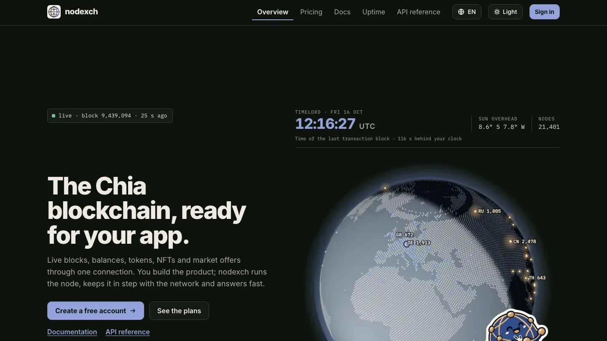

öffentliche Kettendaten für alle
nodexch
Öffentliche Kettendaten für alle: ein schnelles, offenes Tor zur Kette, mit einem Verzeichnis daneben.
- Stand
- Im Test
- Fertig
- Das Tor antwortet genau wie das übliche; Ereignisse live, wenn sie passieren; Konten mit Fingerabdruck-Anmeldung und Schlüsseln
- Als Nächstes
- Voller Betrieb, ein eigener Knoten, Tarife und Guthaben